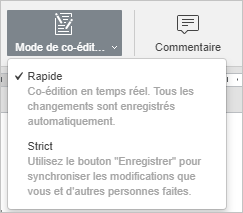
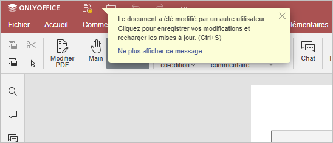
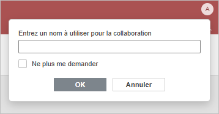

Collaborer sur des fichiers PDF en temps réel
L'éditeur de PDF permet de gérer le flux de travail continu par l'ensemble de l'équipe: communiquer directement depuis l'éditeur, commenter des fragments dans un document en PDF nécessitant l'intervention d'un tiers, enregistrer des versions du fichier PDF pour une utilisation ultérieure.
Dans l'éditeur de PDF, il y a deux modes de collaborer sur des classeurs en temps réel: Rapide et Strict.
Vous pouvez basculer entre les modes depuis Paramètres avancés. Il est également possible de choisir le mode voulu à l'aide de l'icône Mode de coédition dans l'onglet Collaboration de la barre d'outils supérieure:

Le nombre d'utilisateurs qui travaillent sur le document actuel est spécifié sur le côté droit de l'en-tête de l'éditeur - . Pour afficher les personnes qui travaillent sur le fichier, cliquez sur cette icône pour ouvrir le panneau Chat avec la liste complète affichée.
Mode Rapide
Le mode Rapide est utilisé par défaut et affiche les modifications effectuées par d'autres utilisateurs en temps réel. Lorsque vous co-éditez un fichier PDF en mode Rapide, la possibilité de Rétablir la dernière opération annulée n'est pas disponible. Le mode Rapide affichera les actions et les noms des co-éditeurs tandis qu'ils modifient le texte.
Faites glisser le curseur sur le fragment en cours de modification pour afficher le nom de l'utilisateur qui est en train de l'éditer à ce moment.

Mode Strict
Le mode Strict est sélectionné pour masquer les modifications d'autres utilisateurs jusqu'à ce que vous cliquiez sur l'icône Enregistrer pour enregistrer vos propres modifications et accepter les modifications apportées par d'autres utilisateurs. Lorsqu'un fichier PDF est en cours de modification par plusieurs utilisateurs simultanément dans le mode Strict, les passages de texte modifiés sont marqués avec des lignes pointillées de couleurs différentes.

Lorsque l'un des utilisateurs sauvegarde ses modifications en cliquant sur l'icône , tous les autres verront une note dans la barre d'état indiquant qu'il y a des mises à jour. Pour enregistrer les modifications apportées et récupérer les mises à jour de vos co-auteurs cliquez sur l'icône dans le coin supérieur gauche de la barre supérieure. Les mises à jour seront marquées pour vous aider à contrôler ce qui a été exactement modifié.
Vous pouvez spécifier les modifications que vous souhaitez mettre en surbrillance pendant la co-édition si vous cliquez sur l'onglet Fichier dans la barre d'outils supérieure, sélectionnez l'option Paramètres avancés... et choisissez l'une des options:
- Surligner toutes les modifications - toutes les modifications apportées au cours de la session seront mises en surbrillance.
- Voir le dernier - uniquement les modifications apportées après le dernier clic sur l'icône seront mises en surbrillance.
- Surligner aucune modification - aucune modification apportée au cours de la session ne sera mise en surbrillance.
Utilisateurs anonymes
Les utilisateurs du portail qui ne sont pas enregistrés et n'ont pas de profil sont les utilisateurs anonymes qui quand même peuvent collaborer sur les documents. Pour affecter un nom à un utilisateur anonyme, ce dernier doit saisir le nom préféré dans le coin supérieur droit de l'écran lorsque l'on accède au document pour la première fois. Activez l'option "Ne plus poser cette question" pour enregistrer ce nom-ci.
